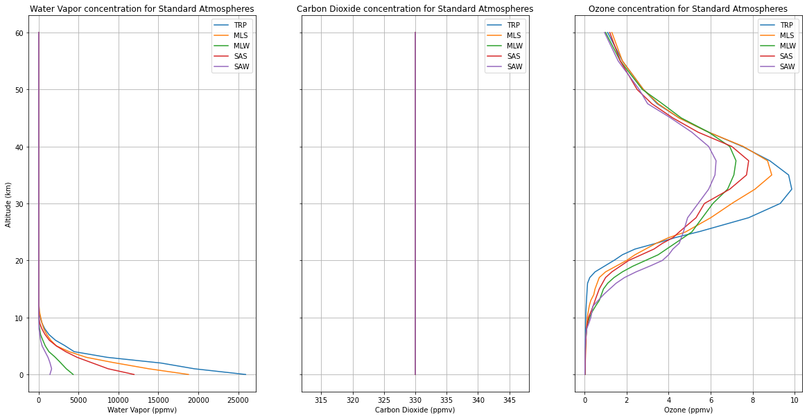

Primary Greenhouse Gas Concentrations in Standard Atmospheres¶
fig, (ax1, ax2, ax3) = plt.subplots(figsize=(20,10), nrows=1, ncols=3, sharey=True)
# H2O
trp.plot(ax=ax1, x='h2o', y='altitude')
mls.plot(ax=ax1, x='h2o', y='altitude')
mlw.plot(ax=ax1, x='h2o', y='altitude')
sas.plot(ax=ax1, x='h2o', y='altitude')
saw.plot(ax=ax1, x='h2o', y='altitude')
ax1.grid()
ax1.set_xlabel('Water Vapor (ppmv)');
ax1.set_ylabel('Altitude (km)');
ax1.set_title('Water Vapor concentration for Standard Atmospheres');
ax1.legend(['TRP','MLS','MLW','SAS','SAW']);
# CO2
trp.plot(ax=ax2, x='co2', y='altitude')
mls.plot(ax=ax2, x='co2', y='altitude')
mlw.plot(ax=ax2, x='co2', y='altitude')
sas.plot(ax=ax2, x='co2', y='altitude')
saw.plot(ax=ax2, x='co2', y='altitude')
ax2.grid()
ax2.set_xlabel('Carbon Dioxide (ppmv)');
ax2.set_ylabel('Altitude (km)');
ax2.set_title('Carbon Dioxide concentration for Standard Atmospheres');
ax2.legend(['TRP','MLS','MLW','SAS','SAW']);
#O3
trp.plot(ax=ax3, x='o3', y='altitude')
mls.plot(ax=ax3, x='o3', y='altitude')
mlw.plot(ax=ax3, x='o3', y='altitude')
sas.plot(ax=ax3, x='o3', y='altitude')
saw.plot(ax=ax3, x='o3', y='altitude')
ax3.grid()
ax3.set_xlabel('Ozone (ppmv)');
ax3.set_ylabel('Altitude (km)');
ax3.set_title('Ozone concentration for Standard Atmospheres');
ax3.legend(['TRP','MLS','MLW','SAS','SAW']);
